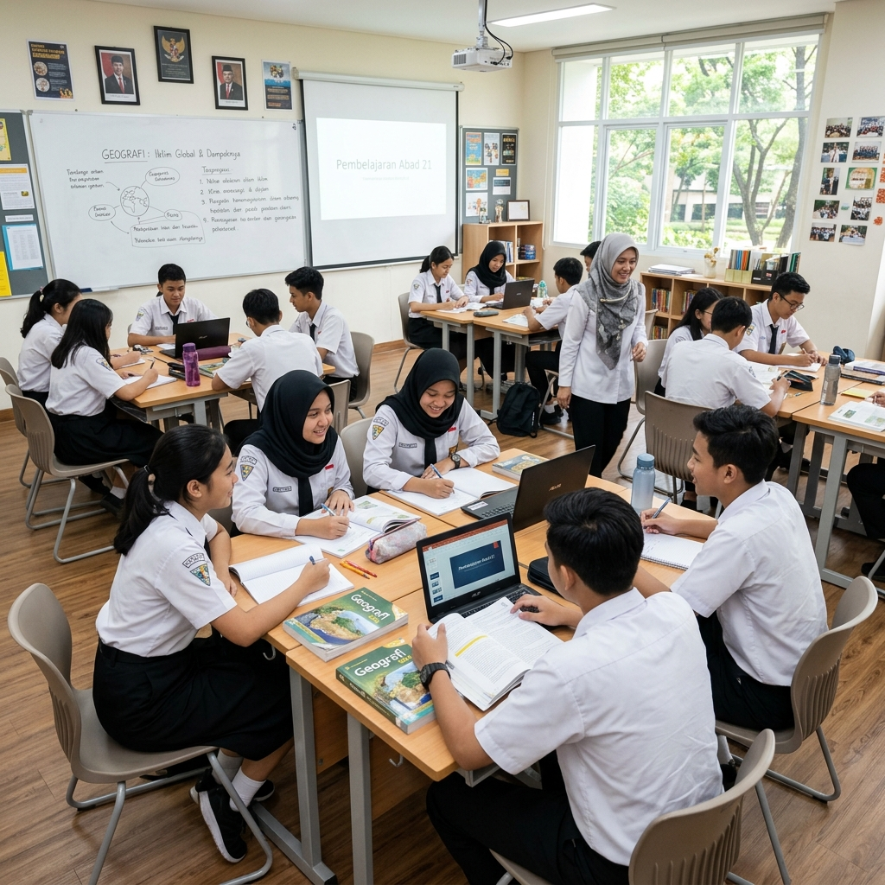
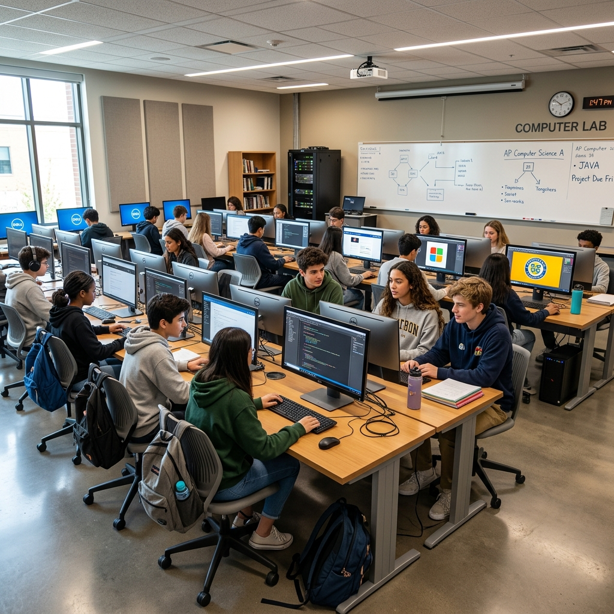

Ilustrasi siswa SMK NMC Malang Jaya sedang melakukan praktik di laboratorium (Sumber: Dokumentasi Sekolah)
Pendahuluan
Di era Revolusi Industri 4.0, otomatisasi dan digitalisasi telah mengubah lanskap dunia kerja. Banyak pekerjaan konvensional yang mulai tergantikan oleh mesin dan kecerdasan buatan. Oleh karena itu, membekali diri dengan pendidikan teoritis saja tidak lagi cukup. Keterampilan vokasi atau keterampilan praktis yang spesifik kini menjadi daya saing utama bagi generasi muda yang ingin terjun langsung ke dunia profesional.
Kebutuhan Industri Saat Ini
Perusahaan modern mencari lulusan yang tidak hanya mengerti teori, tetapi juga siap kerja (ready-to-use). Karakteristik industri saat ini menuntut kelincahan, kemampuan memecahkan masalah, dan penguasaan teknologi seperti IoT, Cloud Computing, atau desain digital terkini. Kurikulum vokasi di SMK dirancang khusus untuk meminimalisir kesenjangan (gap) antara dunia pendidikan dan kebutuhan industri melalui program Teaching Factory dan Praktek Kerja Industri (Prakerin).

Pemanfaatan teknologi terkini dalam proses pembelajaran vokasional sangat penting untuk mencetak lulusan siap kerja.
Peran SMK dalam Menjawab Tantangan
Sekolah Menengah Kejuruan (SMK) seperti NMC Malang Jaya terus beradaptasi dengan menghadirkan program keahlian yang relevan dengan zaman. Fasilitas yang mumpuni, tenaga pengajar yang berkompeten dari praktisi industri, serta dukungan sertifikasi kompetensi merupakan wujud nyata komitmen sekolah dalam menciptakan lulusan berdaya saing global.
Pola pikir bahwa perguruan tinggi adalah satu-satunya jalan menuju sukses mulai bergeser. Lulusan SMK yang dibekali sertifikasi keahlian terbukti memiliki tingkat penyerapan kerja yang tinggi, bahkan banyak yang sukses menjadi wirausahawan muda kreatif.
Kesimpulan
Memilih jalur vokasi adalah langkah strategis untuk masa depan yang lebih pasti di era serba digital ini. Dengan keterampilan praktis dan mental siap kerja, lulusan SMK tidak hanya mampu bertahan, tetapi juga. unggul dalam persaingan industri 4.0.
FAQ (Pertanyaan yang Sering Diajukan)
Admin NMC Malang Jaya
Tim redaksi yang berdedikasi membagikan informasi edukatif, inspiratif, dan terkini seputar dunia pendidikan vokasi dan kegiatan siswa.